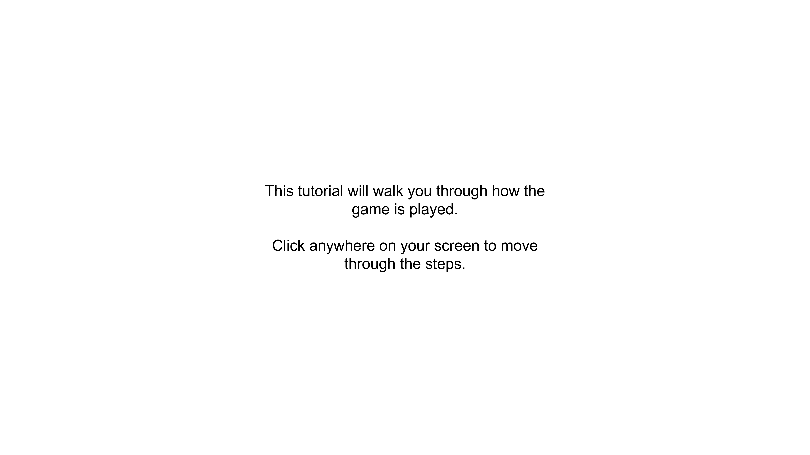

<!DOCTYPE html>
<html lang="en">
<head>
    <title>Pointer</title>
    <meta charset="UTF-8">
    <meta name="viewport" content="width=device-width, initial-scale=1.0">
    <meta http-equiv="X-UA-Compatible" content="ie=edge">
    <script src="lib/lodash/lodash.js"></script>
</head>

<body class="overflow-hidden overflow-y-hidden">
    <div style="display: flex; justify-content: center; align-items: center; width: 100%; height: 100%">
        <div id="imgHolder" style="max-width: 85%;">
            <!--  -->
        </div>
    </div>
</body>

<script>

    function preloadImg(url){
        // url = `static/imgs/tutorial/tutorial5.png`
        let img = new Image();
        img.src = url;
        img.width = window.innerWidth*0.85;
        return img;
    }

    var assets = {imgs: {}}

    _.range(1, 12).forEach(i => {
        assets.imgs[`tutorial${i}`] = preloadImg(`static/imgs/tutorial/tutorial${i}.png`);
    })

    let imgNum = 1;
    // let mainImg = document.getElementById("tutorial");
    let imgHolder = document.getElementById("imgHolder");
    imgHolder.style.width = window.innerWidth*0.95;
    imgHolder.style.height = window.innerHeight*0.95;

    imgHolder.appendChild(assets.imgs.tutorial1)

    setTimeout(() => {
        imgHolder.addEventListener('click', clickFn)
    }, 500)

    const clickFn = () => {
        if (imgNum == 11){
            // Redirect
            window.location.replace(`tutorial.html`);
        } else if (imgNum == 4) {
            // If they're in the suspense condition, keep imgNum the same, if in surprise, increase by 2
            // We'll read it from the JATOS url params
            let condition = "suspense" // replace with jatos function when we move it over
            // let condition = jatos.urlQueryParameters.condition
            imgNum += 1;
            if (condition == "surprise"){
                imgNum += 1;
            }
            imgHolder.replaceChildren(assets.imgs[`tutorial${imgNum}`]);
            if (condition == "suspense"){
                imgNum += 1;
            }
        } else {
            imgNum += 1;
            // mainImg = assets.imgs[`tutorial${imgNum}`]
            // imgHolder.removeChild(im);
            imgHolder.replaceChildren(assets.imgs[`tutorial${imgNum}`]);
        }
    }
</script>

</html>
